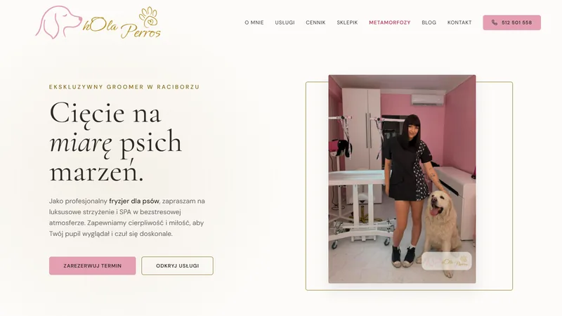
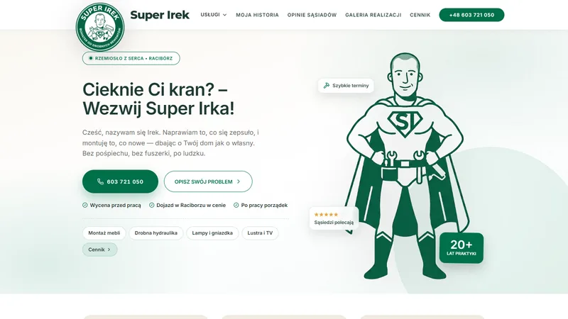
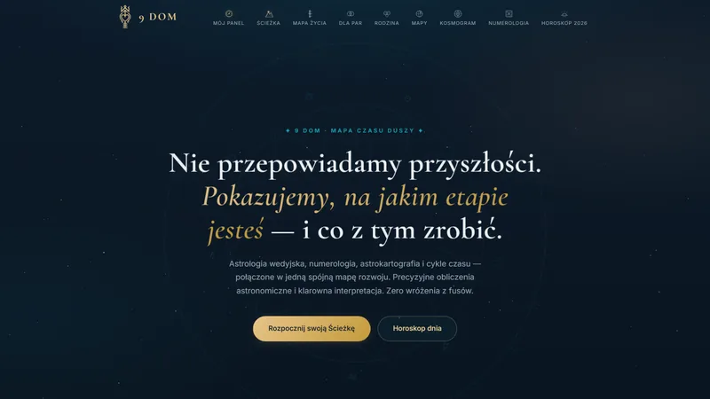
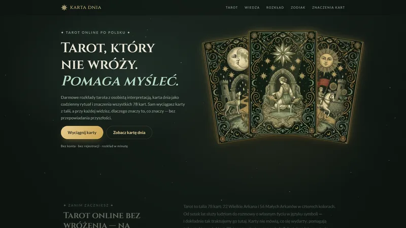

Moje realizacje
Każdy projekt to unikalna historia. Zero szablonów, zero kompromisów — tylko strony, z których jestem dumny.
-

01hOla Perros — groomer
Salon pielęgnacji i strzyżenia psów w Raciborzu. Jasna, elegancka typografia dopasowana do charakteru marki, cennik usług, galeria metamorfoz, sklepik i rezerwacja terminu.
Zobacz, jak powstała -

02Super Irek — złota rączka
Usługi remontowe i montażowe w Raciborzu. Strona zbudowana wokół jednego celu: telefonu od klienta. Autorska ilustracja maskotki, galeria realizacji, opinie sąsiadów i przejrzysty cennik.
Zobacz, jak powstała -

039 Dom — Mapa Czasu Duszy
Aplikacja webowa z kalkulatorami astrologii wedyjskiej i numerologii. Kosmogram, astrokartografia, cykle czasu i panel użytkownika — obliczenia astronomiczne podane zrozumiałym językiem.
Zobacz, jak powstała -

04Karta Dnia — tarot online
Darmowe rozkłady tarota z interpretacją i znaczenia wszystkich 78 kart. Deterministyczny silnik rozkładów, bez rejestracji, z rozbudowaną częścią treściową pod wyszukiwarkę.
Zobacz, jak powstała -
 05
05Alaska — Klimatyzacja
Efektowna strona dla firmy chłodniczej i klimatyzacyjnej z Raciborza. Animowane intro, sekcja blogowa, formularz kontaktowy i pełna optymalizacja wydajności (WebP, lazy loading, code splitting).
Zobacz, jak powstała -
 06
06Life-Centrum
Placówka medyczna w Raciborzu. Nowoczesna prezentacja usług zdrowotnych, punktu pobrań i lekarzy specjalistów. Czytelna nawigacja, responsywność i pełna optymalizacja SEO.
Zobacz, jak powstała -
 07
07Life-Ratownictwo
Transport medyczny i zabezpieczenia imprez masowych. Architektura informacji zaprojektowana tak, by ratownik i organizator wydarzenia znaleźli to, czego szukają w sekundy.
Zobacz, jak powstała -
 08
08WystawFakture.eu
System do wystawiania faktur online. Prosty interfejs, szybkie działanie, pełna zgodność z polskimi przepisami. Aplikacja SaaS z autoryzacją użytkowników i panelem klienta.
Zobacz, jak powstała -
 09
09Czysto-Po
Strona usługowa nastawiona na konwersję klientów. Czytelna struktura, szybkie ładowanie i pełna widoczność w wynikach Google. Marketing i SEO w jednym.
Zobacz, jak powstała
Twój projekt może być następny
Masz pomysł na stronę? Porozmawiajmy — pierwsza rozmowa nic nie kosztuje.
Zadzwoń: 602 622 840